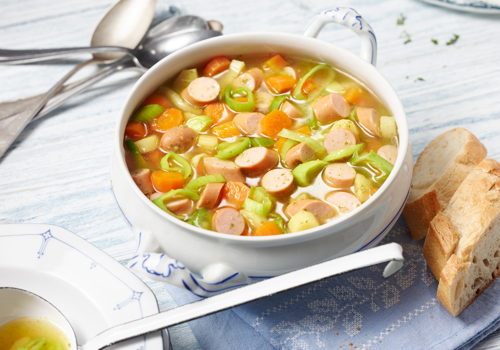

Suppen-Gericht

Zutaten:
| Wiener | 350 g |
| Karotten | 250 g |
| Lauch | 100 g |
| Kartoffeln | 100 g |
| Gemüsebrühe | 1 EL |
| Schmand | 1 EL |
| Salz, Pfeffer | 1 Prise |
Zubereitung:
1.Schritt: Kartoffeln klein schneiden und in Wasser kochen
2.Schritt: Klein geschnittene Karotten und Lauch dazugeben und köcheln lassen
3.Schritt: Gemüsebrühe hinzufügen
4.Schritt: Wiener schneiden und dazu geben
5.Schritt: Mit Salz und Pfeffer würzen und abschmecken
6.Schritt: Mit etwas Schmand servieren